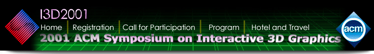

Home | Registration | Call for Participation | For Accepted Authors | Program | Hotel and Travel
CALL FOR PAPERS
15th Anniversary
2001 SYMPOSIUM on INTERACTIVE 3D GRAPHICS
http://www.siggraph.org/conferences/i3d
March 19-21, 2001
Sheraton Imperial Hotel and Conference Center
Research Triangle Park, NC
Sponsored by ACM SIGGRAPH
Submission Guidelines | For More Information
The symposium will focus on the frontiers of real-time interactive 3D computer graphics and multimedia. The symposium will consist of formal paper sessions and hands-on demonstrations where research groups and vendors will show the state-of-the-art in the field. Topics of interest for technical sessions and demonstrations include:
Paper submission deadline: 5 PM, EDT, SEPTEMBER 15, 2000
Further information is available at http://www.siggraph.org/conferences/i3d/HowToSubmit.html
Paper submission deadline is 5 PM, EDT, SEPTEMBER 15, 2000.
Only electronic, full-length paper submissions will be processed.
I3D 2001 will accept for publication only papers reporting work which has not
been previously published in a conference proceedings or journal. Authors may
submit papers based on work that has been shown elsewhere, but which has not
described in a publication. Specifically, work previously shown in a poster
session or as a SIGGRAPH annual conference sketch may be submitted. Authors may
submit papers on work that has been publicly distributed only as a preprint or
tech report.
Paper Formats
We will accept two types of papers:
1.) "Long papers" -- up to 12 pages in length, including figures. This is the format for reporting mature research results or to describe robust working systems. Performance claims should be supported by actual measurements. Full explanations of any special techniques necessary to achieve real-time picture generation and display should be provided. The paper should clearly state what has been achieved and how this makes a contribution to the state-of-the-art in interactive 3D graphics.
2.) "Short papers" -- up to 4 pages in length, including figures. This is the format for interesting work "in progress," where preliminary results are available but a careful evaluation has not been done yet, or for break-through speculative proposals that have not yet been reduced to practice. In both cases enough results or analysis should be made available to demonstrate that the described prototypes or concepts have merit and are of use.
Both types of submitted papers should be in close-to-final form with respect to content -- they'll be evaluated on what they describe, not on what COULD be done. Refinements, enhancements and improved figures can be added later after the completion of the formal review process.
Video Tapes
Videotapes of work reported in a paper submission are strongly recommended, where appropriate. Seven (7) copies of any accompanying video must be received by the same deadline, 5 PM EDT, September 15, 2000. All video tapes must be NTSC VHS format.
Submit videos to:
I3D2001 c/o Mary Whitton
Computer Science Dept., UNC-CH
Sitterson Hall, CB 3175
S. Columbia St.
Chapel Hill, NC 27599-3175
Reviewing
The program committee will review all papers submitted by the deadline in a double-anonymous reviewing process. Authors will be notified of the results of the review around November 6th.
The authors of a long paper may be asked to rewrite their paper as a short paper (but not the other way round). Long papers will be given 25 minutes of presentation time at the symposium; short papers will get 15 minutes of presentation time.
Publication
Authors of accepted papers commit themselves to submitting a camera-ready final manuscript by December 8 and video by January 7. Guidelines for authors of accepted papers can be found here. The required copyright form can be found here.
In the event that either of the manuscript or the video has not been submitted by the deadline, the committee reserves the right to remove the paper from the symposium, or use the original paper and/or video in the symposium proceedings.
For more information about the submission process, contact one of the two
program chairs:
John F. Hughes <jfh@cs.brown.edu>
Carlo H. Sequin <sequin@cs.berkeley.edu>
For more information about the conference organization and facilities,
contact the general conference chair:
Mary Whitton <whitton@cs.unc.edu> or
see the conference home page URL: http://www.siggraph.org/conferences/i3d
We are looking forward to your participation and paper submissions.
John Hughes and Carlo Sequin
Papers Co-chairs